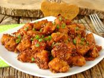
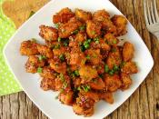

Ballı susamlı tavuk; çin mutfağının geleneksel tariflerinden biridir.
Yumuşacık tavuk etleri, hafif tatlı ve tuzlu sosunun lezzeti,
kavrulmuş susamın çıtırlığı ile çoğu kişinin çok sevdiği dünya mutfağından bir tavuk yemeğidir.
Siz de sofralarınızda yer alacak farklı bir tarif arıyorsanız ballı susamlı tavuk eti tam size göre.
Çin usulü hazırlanan bu pratik tarif favori yemeğiniz bile olabilir.
Hadi şimdi Ballı Susamlı Tavuk Tarifi ne geçelim
Ballı susamlı tavuk yapımı için; öncelikle 3 yemek kaşığı susamı bir tava içine koyup,
hafifçe kahverengi olana kadar yakmadan kavurun. Ardından kavrulan susamı ocaktan alıp,
başka bir kaba aktarıp, soğumaya bırakın. Daha sonra yarım kilo tavuk göğüs etini
çok büyük ve çok küçük olmayacak şekilde küpler halinde kesin.
Diğer tarafta orta büyüklükte derin bir kap içine 2 adet yumurta kırın. Üzerine 3 yemek kaşığı mısır nişastası ekleyip,
pürüzsüz bir kıvam alana kadar iyice çırpın. Doğradığınız tavuk etlerini yumurtalı karışımın içine koyup, iyice karıştırın.
Sos için; bir kase içine 2 yemek kaşığı soya sosu, 2 yemek kaşığı ketçap, 2 yemek kaşığı limon suyu, 2 yemek kaşığı bal,
1 tatlı kaşığı toz şeker, 2 diş rendelenmiş sarımsak, damak tadınıza göre tuz ve karabiber ekleyin. Soya sosu
tuzlu olduğu için tuz miktarını dikkatli bir şekilde ayarlayın. Ardından sosun içine kavrulmuş susamı koyun.
Tüm sos malzemelerini iyice karıştırıp, kenara alın.
Daha sonra yumurtalı nişastalı karışımın içinde olan tavuk etlerini tek tek alıp, kızgın yağ içine koyun.
Tavuk etlerini kızgın yağ içinde arkalı önlü kızartın. Son olarak orta boy geniş bir tencere içine
ballı susamlı sosu döküp, biraz ısıtın. Sosun üzerine kızarttığınız tavuk etlerini ekleyin.
Tavuk etlerinin sosa iyice karışmasını sağlayın. Ardından tencerenin kapağını kapatın.
Ballı susamlı tavuk etlerinin içleri tamamen pişinceye kadar kısık ateş üzerinde 20 dakika pişirin.
Ballı susamlı tavuk piştikten sonra servis tabağına alıp,
üzerine isteğe göre ince ince doğranmış taze soğan yaprağı serpiştirip, servis edebilirsiniz.
Afiyet olsun.
 İsterseniz sizin için hazırladığımız videoyu keyifle izleyebilirsiniz.
Bu tarifi hazırlamak için toplamda 50 dakika gerekmektedir. Bu sürenin 20 dakikası hazırlık,
30 dakikası da pişirme süresidir. Tarifte vermiş olduğumuz malzemeler 2 kişilik ballı susamlı tavuk içindir.
Bu ödevi hazırlamak için referans aldığım site: Ballı Susamlı Tavuk